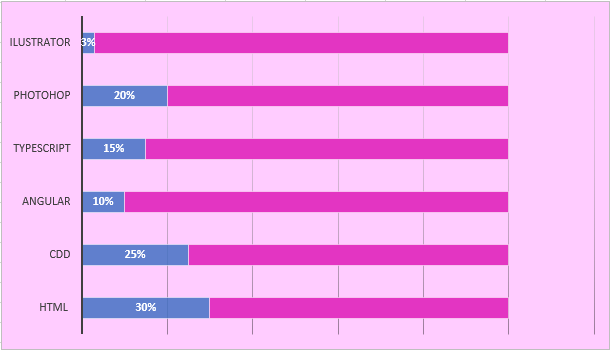

¿Quién soy?

Mariangli Beltrán
Mi nombre es Mariangli Betania Beltrán Da Silva, nací el 4 de agosto de 1998. Actualmente tengo 20 años de edad, venezolana, específicamente Caraqueña. De familia portuguesa y maracucha, lo cual a resultado en una extraña pero increíble combinación. Soy la menor de 3 hermanos. Inicié mis estudios en el Pre-escolar Guacaragua (ubicado en Terrazas del Ávila), luego de 13 largos años de aprendizaje en el Colegio Madre del Divino Pastor del Marqués, puedo llamarme ex-alumna de esa segunda casa. Actualmente soy estudiante de Octavo Trimestre en la Universidad Metropolitana en las Carreras de Ingeniería de Producción e Ingeniería en Sistemas y Quinto Trimestre en la Universidad Simón Bolívar en la Carrera Biología.
Habilidades/Pasatiempos
Habilidades

Pasatiempos
Me encanta ver series, en especial aquellas que involucren análisis y misterio (pero detesto las de terror), en mi poco tiempo libre ya que la universidad desde nuestro segundo trimestre nos ha consumido, serían jugar juegos de mesa, salir a la piscina en plan tranquilo de amigos, ver videos y escuchar música